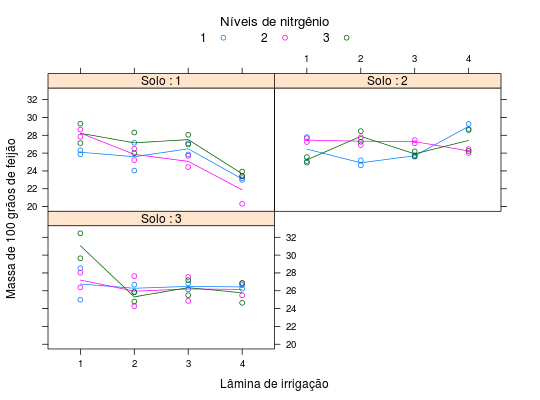

Dados de um experimento conduzido em faixas, no delineamento de blocos ao acaso, com duas repetições e parcelas divididas. Se testaram, nas faixas horizontais, as lâminas de água aplicada em irrigação por aspersão, nas faixas verticais as formas de preparo de solo e nas subparcelas, doses de nitrogênio. Os dados são de massa de 100 grãos de feijão, sem unidade de medida.
Um data.frame com 72 observações e 5 variáveis
lamnitsoloblocomassaZIMMERMANN (2004), Tabela 10.20, pág 213.
library(lattice) data(ZimmermannTb10.20)#> Warning: data set ‘ZimmermannTb10.20’ not foundstr(ZimmermannTb10.20)#> 'data.frame': 72 obs. of 5 variables: #> $ lam : Factor w/ 4 levels "1","2","3","4": 1 2 3 4 1 2 3 4 1 2 ... #> $ nit : Factor w/ 3 levels "1","2","3": 1 1 1 1 2 2 2 2 3 3 ... #> $ solo : Factor w/ 3 levels "1","2","3": 1 1 1 1 1 1 1 1 1 1 ... #> $ bloco: Factor w/ 2 levels "1","2": 1 1 1 1 1 1 1 1 1 1 ... #> $ massa: num 26.3 24 25.9 23.2 27.9 ...ftable(xtabs(~solo + nit + lam, data = ZimmermannTb10.20))#> lam 1 2 3 4 #> solo nit #> 1 1 2 2 2 2 #> 2 2 2 2 2 #> 3 2 2 2 2 #> 2 1 2 2 2 2 #> 2 2 2 2 2 #> 3 2 2 2 2 #> 3 1 2 2 2 2 #> 2 2 2 2 2 #> 3 2 2 2 2xyplot(massa ~ lam | solo, groups = nit, data = ZimmermannTb10.20, type = c("p", "a"), as.table = TRUE, auto.key = list(title = "Níveis de nitrgênio", cex.title = 1.1, columns = 3), strip = strip.custom(strip.names = TRUE, var.name = "Solo"), xlab = "Lâmina de irrigação", ylab = "Massa de 100 grãos de feijão")